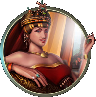

Civilization:

Byzantium - Theodora
Patriarchate of Constantinople: Choose one more Belief than normal when you found a Religion.
Victory Type:
Domination Victory
Control every civilization's capital as well as your own
Religion:
Tengriism
⟳
Pantheon Belief: Sacred Waters
+1 Happiness from cities on rivers
Founder Belief: Cathedrals
Use Faith to purchase Cathedrals
First Follower Belief: Pilgrimage
+2 Faith for each foreign City following this religion
Second Follower Belief: Peace Loving
+1 Happiness for every 8 followers of this religion in non-enemy foreign cities
Enhancer Belief: Messiah
Prophets 25% stronger and earned with 25% less Faith
First Completed Policy:
Tradition
Best for small empires. Adopting Tradition greatly increases the rate of border expansion in cities, grants 3 Culture in the Capital and unlocks building the Hanging Gardens wonder. Adopting all Policies in the Tradition tree will grant +15% Growth in all cities and a free Aqueduct in your first four cities. It also allows the purchase of Great Engineers with Faith starting in the Industrial Era.
Ideology:
Freedom
Best for relatively small, peaceful empires, because it has a number of tenets that enhance the city population, the performance of Specialists (of all types), and also of Great People, including their tile improvements. It also has a good means of defense, making it the choice of civilizations which favor a defensive playstyle.